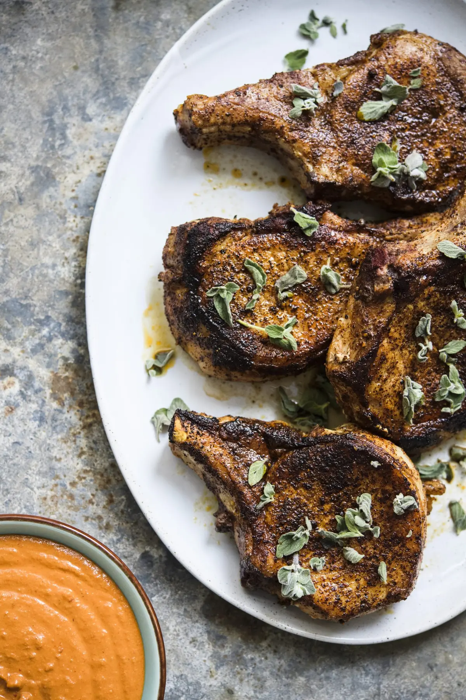

Pork Chops with Peanut-Guajillo Sauce
- Total time40 mins
- Serves4
- Ingredients12
- Steps4

Ingredients
- 4 large guajillo chilies (1 ounce), stemmed, seeded and torn into 2-inch pieces
- 1 árbol chili, stemmed
- 2 medium garlic cloves, smashed and peeled
- 3/4 cup unsalted, dry-roasted peanuts
- 2 tablespoons extra-virgin olive oil
- 2 teaspoons agave syrup
- 1 tablespoon lime juice
- Kosher salt and ground black pepper
- 2 tablespoons fresh oregano, plus more to serve
- 1 tablespoon chili powder
- 4 center-cut, bone in pork chops, each about 1 inch thick, patted dry
- 2 tablespoons grapeseed oil or other neutral oil
Directions
- Heat the oven to 450ºF with a rack in the middle position. In a small saucepan over medium, bring 1 1/2 cups water to a simmer. Cover and reduce to low. In a 12-inch oven-safe skillet over medium-high, toast both varieties of chili and the garlic, pressing with a wide metal spatula and flipping halfway through, until fragrant, about 1 minute. Transfer to the saucepan, pressing to submerge them in the water. Remove the pan from the heat, cover and let stand until the chilies have softened, about 10 minutes. Set the skillet aside.
- In a blender, combine the peanuts, olive oil, agave, lime juice, and 1 teaspoon salt. Using a slotted spoon, transfer the chilies and garlic to the blender, then add 3/4 cup of the soaking liquid. Puree until smooth, 1 to 2 minutes, scarping the sides as needed. If necessary to achieve a smooth texture, add the remaining soaking liquid, 1 tablespoon at a time. Add the oregano and pulse until roughly chopped, about 3 pulses. Transfer to a serving bowl and set aside.
- In a small bowl, stir together 1 tablespoon salt, the chili powder and 1 teaspoon pepper. Use to season the pork chops on all the sides. In the 12-inch skillet over medium-high, heat the grapeseed oil until barely smoking. Add the chops and cook until deeply browned on the bottoms, about 5 minutes. Using tongs, flip, then transfer the skillet to the oven. Cook until the meat near but not touching the bone reaches 140ºF, or is just slightly pink when cut into, 6 to 8 minutes.
- Transfer the chops to a wire rack set over a rimmed baking sheet and let rest for 10 minutes. Place the chops pn a serving platter and sprinkle oregano. Serve with the sauce.
Recipe credit: Milk Street Tuesday Nights by Christopher Kimball